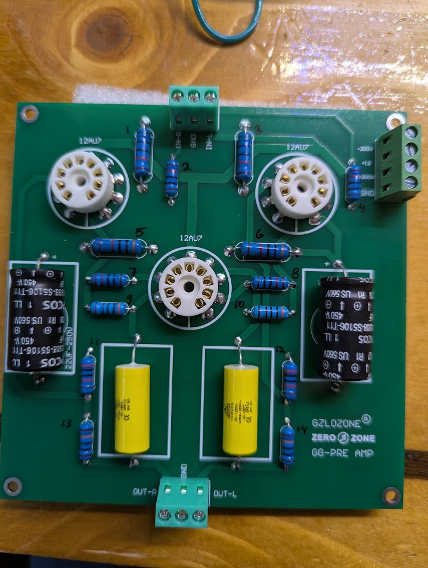

GG-PRE AMP — Component ID
Sources: close-ups in pcb-photos/closeups/; resistor numbering photo (user-measured values, 2026-11-09).
All resistors: blue 5-band metal film, 1% (brown tolerance band) unless noted.
Wattage column: estimated from body length/diameter on the board vs neighbors (not from body print). Chinese kits often use ~2 W for the fatter/longest HV plate loads and ~1 W for the standard blue bodies. Treat as rebuild guidance; verify part marking if available.
Resistor reference photo (R1–R14)
Ink numbers on the component side match the table below.

Download / path: component-side-resistors-numbered.jpg

Resistor BOM (R1–R14) — confirmed values
Layout on component side (matches user ink numbers):
| Ref | Ω | Est. power | Size (visual) | Board region |
|---|---|---|---|---|
| R1 | 50 k | ~2 W | Large (fat body, long) | Top, near V1 / IN-R side |
| R2 | 10 k | ~1 W | Standard | Top center, near input block |
| R3 | 50 k | ~2 W | Large | Top, near V2 / power side |
| R4 | 10 k | ~1 W | Standard | Top right, near power terminal |
| R5 | 30 k | ~2 W | Large / long horizontal | Mid, left of V3 |
| R6 | 30 k | ~2 W | Large / long horizontal | Mid, right of V3 |
| R7 | 10 k | ~1 W | Standard | Mid, below R5 |
| R8 | 10 k | ~1 W | Standard | Mid, below R6 |
| R9 | 3 k | ~1 W | Standard | Mid, below R7 |
| R10 | 3 k | ~1 W | Standard | Mid, below R8 |
| R11 | 20 k | ~1 W | Standard (tall mount) | Lower, above Cout-R |
| R12 | 20 k | ~1 W | Standard (tall mount) | Lower, above Cout-L |
| R13 | 100 k | ~1 W | Standard vertical | Bottom left / OUT-R string |
| R14 | 100 k | ~1 W | Standard vertical | Bottom right / OUT-L string |
Value summary (qty)
| Value | Qty | Refs |
|---|---|---|
| 50 kΩ | 2 | R1, R3 |
| 30 kΩ | 2 | R5, R6 |
| 20 kΩ | 2 | R11, R12 |
| 10 kΩ | 4 | R2, R4, R7, R8 |
| 3 kΩ | 2 | R9, R10 |
| 100 kΩ | 2 | R13, R14 |
Stereo symmetry: each value appears in an L/R pair except the shared mid column (R5–R10 are paired L/R).
Wattage sizing notes
| Visual class | Typical body on this PCB | Refs | Typical use on ±200 V GG stages (I) |
|---|---|---|---|
| ~2 W | Noticeably thicker/longer than the small blues; similar scale to socket ceramic ring | R1, R3, R5, R6 | Plate / HV anode loads (higher dissipation) |
| ~1 W | “Normal” blue metal-film axial (most of the board) | R2, R4, R7–R14 | Grid leaks, cathode bias, feedback, input series |
Dissipation on ±200 V depends on actual bias (measure on a built unit). If a 1 W part runs hot, step up to 2 W of the same value.
Capacitors (confirmed from body print)
| Ref | Location | Installed | Silk | Conf |
|---|---|---|---|---|
| CoutR | Bottom-left / OUT-R | ARCOTRONICS MKP C.4G · 1.0 µF ±5% · Un 250 V~ | outline | C |
| CoutL | Bottom-right / OUT-L | Same as CoutR | outline | C |
| Cdec (left) | Mid-left | EPCOS B43588-S5106-T… · 10 µF · 450 V | 22UF-250V |
C |
| Cdec (right) | Mid-right | Same / 10 µF 450 V | 22UF-250V |
C |
Superseded photo-only guesses
Earlier band reads (300 kΩ, 300 Ω, 1 kΩ, 120 Ω / 12 kΩ conflicts) are replaced by the R1–R14 table above where they differ.
Still useful to meter
- Heater wiring: pins 4/5/9 ↔
+12/GND(series vs parallel). - Which electrolytic
+pad ties to+200Vvs-200V. - Buzz-out: map each R1–R14 to exact tube pin / net (topology still I).
Close-up photo index
| File | Region |
|---|---|
closeups/01-electrolytic-epcos.jpg |
Right HV electrolytic + nearby R |
closeups/02-brand-out-area.jpg |
Brand + mid resistors |
closeups/03-out-l-film.jpg |
CoutL |
closeups/04-out-l-resistors.jpg |
OUT-L resistor pair |
closeups/05-center-v3-resistors.jpg |
Center stack |
closeups/06-input-terminal.jpg |
Input terminal |
closeups/07-sockets-center.jpg |
V1/V3 sockets |
closeups/08-out-r-area.jpg |
OUT-R area |